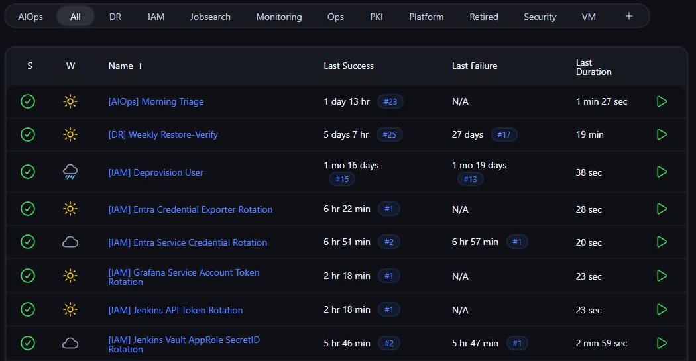

The platform
Jenkins is the engine this lab runs on. When a server gets built, a certificate renews, a backup is verified, or a user account is created, a Jenkins job started it and a Jenkins job proved it finished. This page walks through how that engine works, then through the six subsystems built on top of it. Where a design has a limit, it is named here rather than rounded up.
Also in Platform:
- Engineering capabilities. The capabilities and subsystem pages this platform is built from. Read more →
- Roadmap. What is already live, what is still being built, and where the next trade-offs sit. Read more →
- Vault. The secrets system, its measured recovery, and the limits that are still named plainly. Read more →
- Windows identity. Directory, certificate authority, MFA, and the identity failure that is still shown as an active investigation. Read more →
- Mail. Self-hosted mail with the delivery path, DNS records, and operational limits explained. Read more →
- Recovery test. The restore check that destroys a VM on purpose and times the recovery path. Read more →
Jenkins is the engine
Jenkins is an automation server: you give it a job, it runs that job to completion, and it tells you whether the job worked. In this lab it is the only thing allowed to change infrastructure. There is no console where I click "create VM" and no laptop where I run a playbook by hand. A change to the estate is a Jenkins job, or it does not happen.
That constraint is the whole design. It means every change has a run number, a log, an operator who triggered it, and an exit code. It also means the pipeline definitions are the real documentation of how this lab works, because there is no second, undocumented path.

Counted from the repository every time this page is built: 75 pipeline definitions, 26 of them wired into the seed script as code today, and 254 helper scripts the pipelines call. These three numbers are generated, never typed, so the page cannot quietly drift away from the tree it describes.
The gap between those first two numbers is deliberate and worth explaining, because it is the honest version of "jobs as code". Every job's definition lives in git, in a Job DSL seed script that can recreate the controller's jobs from scratch. But cutting the existing live jobs over to that script is done one batch at a time, each batch checked against the running job first, because a single seed run rewrites a job's whole configuration and a mistake there is silent. Six rows are active in the seed today. The rest sit in the same file, commented and ready, waiting their turn. A big-bang cutover of all of them would be faster and would prove nothing.
How Jenkins fits into AutomationLab
The diagram below is the whole engine on one page: what starts a job, what the job does, which systems it talks to, what it leaves behind, and the point where it stops and Argo CD takes over. The numbered markers are explained underneath. Boxes with a link go to the page that tells that system's story.
1. Four ways in, and nothing else. Jenkins wakes up for exactly four reasons: I press Build with Parameters, a schedule fires, the seed job regenerates jobs from git, or a merge to the main branch needs work done. Anything that destroys something waits at an approval gate with the plan in front of me first.
2. Jobs start, do the work, verify it, and stop. That is what Jenkins is good at and it is the reason the cluster does not use it for everything. A provisioning run has a beginning and an end. Keeping a cluster matching its definition does not, which is the next marker.
3. Jenkins orchestrates, it does not own. It holds no secrets, because Vault issues them at run time. It assigns no addresses, because NetBox decides those. It builds nothing directly, because Terraform and Ansible do that. What Jenkins owns is the sequence, the gates, and the evidence. When a check cannot produce an answer, the job stops instead of guessing.
4. Every job begins and ends in the same place. A job reads its configuration from git at the start, and writes its result back to git at the end: the record of the machine it built, the report it generated, the image digest it pinned. Nothing in the estate is configured by hand in a web interface, so the repository is not a description of the lab, it is the lab.
5. Two engines, one source of truth. Argo CD begins where Jenkins stops. Jenkins finishes at a commit; Argo CD watches git and continuously pulls the Kubernetes cluster back into line with it. There is no job to run, because drift itself is the trigger. Imperative work that finishes goes to Jenkins, and convergent work that never finishes goes to Argo CD.
6. And the loop closes. The cluster Argo CD reconciles is the cluster Jenkins runs on. The controller and its build agents are pods like anything else, which is uncomfortable in exactly the way it should be: the engine is a workload of the platform it operates.
Reading the diagram
Colour carries meaning in every diagram on this site, and it means the same thing here.
- Jenkins and job-driven work
- rules, proofs, and markers
- Argo CD and continuous reconciliation
- dashed line: handoff at the commit
Arrow in a title means that box links to its page.
The five steps every job follows
Pipelines in this lab are not written from scratch each time. They follow the same five steps in the same order, and the reason is that each step is where a specific class of mistake gets caught. The provisioning pipeline, the longest one in the lab, is the clearest example, so its real stages are named here.
1. Read the configuration from git. The job checks out the repository first, before it does anything else. There is no other source of configuration, so there is nothing to reconcile.
2. Ask the systems that hold the truth. Provisioning validates the target, runs a name collision check against every system that could already know the name, allocates an address from NetBox, and picks a hypervisor node. An unreachable system counts as a collision rather than a silent all-clear, which is the difference between a check and a formality.
3. Pass the gates. Input validation, the collision result, and then an explicit approval stage where the plan waits for me to read it. Nothing destructive happens on the far side of a gate that has not returned an answer.
4. Act through the tools. Terraform plans, then Terraform applies, then Ansible configures what was built. Jenkins is running the sequence, not doing the work.
5. Record what happened. The machine is registered for monitoring, a DNS record is created, and a machine-readable record of the host is committed back to git. A job that changed the estate and left no record of it would be the same as no job at all.
The step boundaries are also where failure is handled, and the rule is roll-forward rather than rollback. The apply is the line: fail before it and the reserved address is released, so nothing is left orphaned; fail after it and the machine is kept, because re-running the same request continues from where it stopped. A live machine never gets rolled back underneath itself.
Provisioning is a pipeline, not a checklist
A request for a VM becomes a single pipeline run. Before anything is allocated, a collision check asks every system that could already know the name, and an unreachable system counts as a collision rather than a silent all-clear. Then an address is allocated from the IPAM system of record, a node is chosen, and a plan is built in that machine's own infrastructure-as-code workspace. I approve the plan, it applies, the host is registered for monitoring with a unique per-host key minted straight into the secrets manager, and only then does configuration management run, so the agent is trusted before it ever starts.
Failure is roll-forward, not rollback. The apply is the boundary: fail before it and the reserved address is released, so nothing is orphaned; fail after it and the machine is kept, because re-running the same request continues from where it stopped. A live VM never gets rolled back underneath itself. Decommission reverses the build in the safe order, releasing the address only once the machine is actually gone.
Both Linux and Windows are first-class, and they differ where it matters: Windows clones a template built as code by its own image pipeline, while Linux boots a shared cloud image with no golden-template dependency. Each VM getting its own state workspace is the point: a bad apply is scoped to one machine instead of the fleet.
A platform that heals itself, and says so
Monitoring does not just alert, it repairs. An engine reads each failure and classifies it, then splits the work: drift it can correct at the server, such as a moved address or a stale key, it fixes directly, and anything needing a touch on the host itself is queued as a plan. That plan is emailed in full and waits at an approval gate I hold; unapproved, it times out and not one host is touched. Dispatch is OS-aware, taking a different route to Linux and to Windows, and deliberately running only the roles that repair monitoring, never the provisioning roles that would be destructive on a live host.
The audit trail is honest about its own limits. Every run records an outcome per host, and the vocabulary is exactly what the engine can actually observe: applied, dispatched, or escalated. It does not claim a heal went green, because it does not yet watch the host afterwards, and inventing that verdict would make the record a liability. One narrow case runs with nobody in the loop at all, restarting a single stateless service: it is fenced by a maintenance-window guard, a hard two-attempt cap so it can never loop, and an allowlist on the host permitting exactly one command and nothing else.
Identity, from first day to last
Joiners and leavers are pipelines, driven by declarative role definitions rather than per-person judgement: a role maps to its groups, its mail lists, and its app assignments. On the way in, an account is created in the authoritative on-prem directory, then the cloud side waits out directory-sync latency before assigning cloud groups and single-sign-on tiles. Temporary credentials are minted with a short time-to-live and one-time use.
On the way out, nothing is deleted. Offboarding disables first: strip the groups, datestamp the record, move the object aside, and commit a machine-readable snapshot of the account before the first group comes off, so a wrong offboard is a restore rather than an incident. Deletion happens only after a 30-day grace period, and only for accounts with a clean paper trail. An account that someone re-enabled, or one that arrived outside the pipeline, is flagged as an anomaly and left alone: the sweep only removes what it can explain.
The best story here is a bug I found in my own control. Deprovisioning is gated by two-person approval, restricted to an admin allowlist, and the requester cannot approve their own request. An audit of that gate found it fail-open: when the requester was blank, which happens on API, timer, and replay-triggered runs, the identity check short-circuited and a single actor could approve their own offboard. It now hard-fails on a blank requester, so every path reaches the gate with a name attached. A control nobody audits is a control nobody has.
AIOps: triage that earns its place
Collectors sweep monitoring, metrics, CI, and backups into one findings table, each run leaving a heartbeat so a quiet night is distinguishable from a broken collector. A local model classifies each finding, correlation is done deterministically in code rather than asked of the model, and a short digest lands before the day starts, carrying a health banner so a degraded run is visibly red instead of silently empty. When something fires, an analyzer returns a probable cause and a single suggested first check, inline with the alert.
Scanner triage fails closed. Vulnerability and secret-scanner output is sorted into exploitable-in-context versus likely-noise, but only a valid noise verdict may ever downgrade a finding: if the model is down, times out, or answers with nonsense, the finding stays real. Secret values are dropped before the model sees them at all. Untrusted text is fenced and treated as data, and there is no path from model output to execution: the output becomes a row, an email, or an issue, never a command. Every verdict is a database row rather than a log line, and the boundary between proposing and doing is hard.
Observability, and one screen to start from
Three tools with distinct jobs: agent-based monitoring for the traditional fleet, Prometheus for the Kubernetes and virtualization estate, and Grafana as the single pane over both. Dashboards are code, not clicks: committed JSON becomes a config object the platform hot-loads, so the repository is the source of truth and a dashboard edited in the UI has nowhere to hide.
The overview screen is generated, and it polices itself. A generator builds the operations overview from the dashboards themselves, refusing to build if a dashboard is missing its domain tag or a domain has no single primary, and CI regenerates it to fail on drift. A nightly job compares the live dashboard against the generated one and raises a problem when they disagree. One rule was learned the hard way and is now enforced in tests: no-data must never render green. A tile with no signal is grey, because a green light that means "I have no idea" is worse than no light at all. Alerting is deliberately email only, through one auditable path.
Live infrastructure evidence
This public dashboard shows node availability, guest state, per-node CPU and memory, storage use, and recovery-test state under stable descriptive aliases. Hypervisor names, numeric guest IDs, addresses, exporter labels, and management URLs are removed before the dashboard can query the data.
Checking the live infrastructure dashboard.
The live infrastructure dashboard is unavailable. No cached node or guest state is presented as current.
Secrets, and a recovery I actually proved
One system owns every secret. Nothing is written to disk and nothing is committed: pipelines fetch what they need at run time and hold it in memory, workloads authenticate by role rather than by carrying a password, and two independent scanners backstop the rule, one at commit time and one at write time, so a secret has to beat both to reach the repository.
Then I destroyed it on purpose. Recovery claims are worthless until tested, so the secrets VM was not drained or gracefully shut down, it was destroyed outright, then restored from that night's snapshot. It came back initialized and unsealed 97 seconds later, and a canary secret written minutes before the destroy was still there, with credential fetches working immediately afterwards. The honest scope: that is a single-node, crash-consistent restore of a VM, not a high-availability failover, and I would not sell it as one. The exercise also did what a good game day should, surfacing real defects that became tracked work rather than a clean write-up.
Code on GitHub
The AutomationLab repository stays private because it contains live configuration and network detail. Public pages cross a fail-closed scrub gate. The subsystem links above explain how the platform works without exposing its private source.
production-automation is de-identified professional work predating the lab. Each script documents its story, failsafes, and setup.